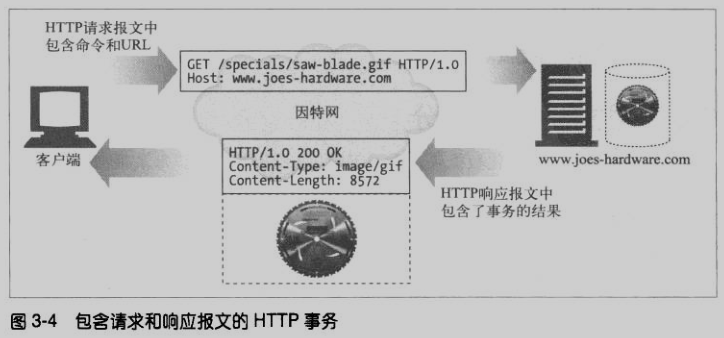
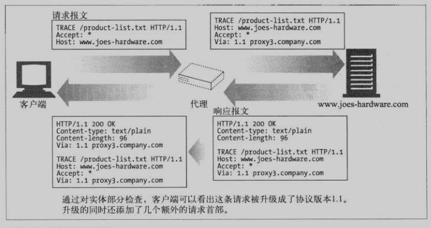
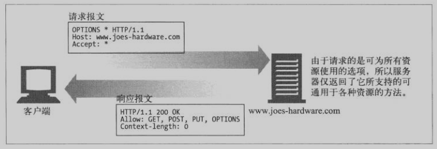
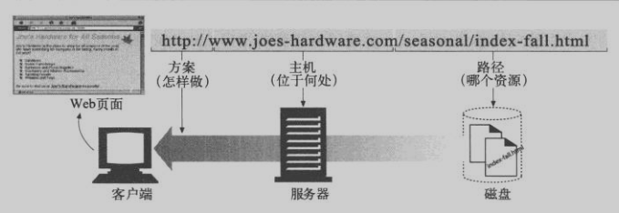
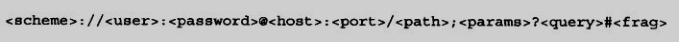
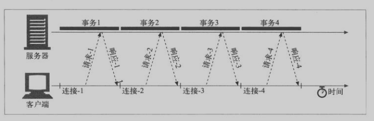
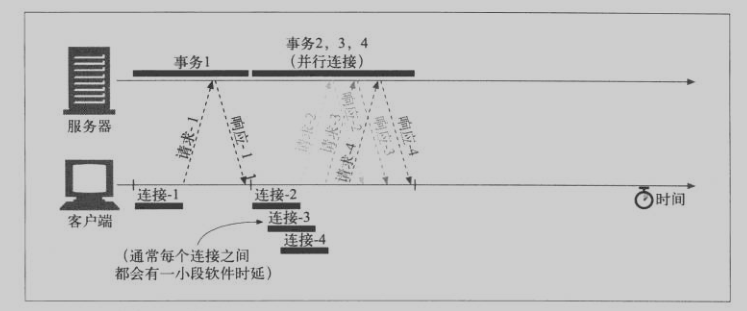
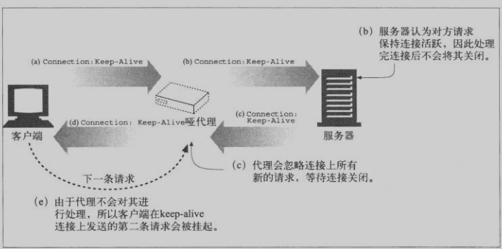
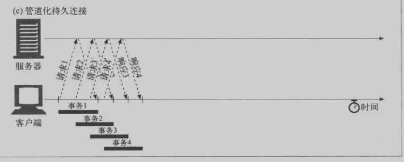

本文主要介绍http的协议基础：主要包括报文的结构、请求的方法、url、状态码、header，以及http的连接
报文协议基础
组成部分
起始行

如图：
请求报文起始行：方法 url 协议类型
响应报文起始行：协议类型 响应码 响应码的说明
首部
部首就是一系列键值对组合，用来说明连接及主体的数据的意义。下边会着重介绍请求与响应报文的相应首部。
主体
由任意数据组成的数据块。如上可以直接是字符串，上传的文件，表单等数据。
方法
| 方法 | 描述 | 是否包含主体 |
|---|---|---|
| GET | 从服务器获取资源 | N |
| HEAD | 只获取资源的首部 | N |
| POST | 发送需要处理的数据 | Y |
| PUT | 将主体部分存储在服务器上 | Y |
| TRACE | 追踪报文路径 | N |
| OPTIONS | 在服务器上可以执行哪些方法 | N |
| DELETE | 从服务器上删除文件.与put相对 | N |
- HEAD
与GET行为类似，但服务器只返回首部。一般用于：- 通过状态码，查看资源是否存在
- 在不获取资源情况下了解资源的类型
- 通过首部，测试资源是否被修改？【这个还不明白，难道是对比资源的长度】
PUT与POST
put方法与post方法都是往服务器上传数据。put语义是让服务器用请求主体数据来创建一个由所请求url命名的新文档。如果已经存在，则替换它。
post将表单数据发送的服务器。
现在这里文件上传时，一般也是用post表单的方式上传。
put区分？TRACE

如上图所示，主要用于验证请求穿过的代理OPTIONS

用于请求服务器告知其支持的各种方法.URL
组成部分
- URL的sheme，也就是协议类型，https/http/ftp等等
- 服务器位置
- 资源路径
格式
相对url
状态码
分类：
| 整体范围 | 已定义范围 | 分类 |
|---|---|---|
| 100-199 | 100-101 | 信息提示 |
| 200-299 | 200-206 | 成功 |
| 300-399 | 300-305 | 重定向 |
| 400-499 | 400-415 | 客户端错误 |
| 500-599 | 500-505 | 服务器错误 |
常见：
| 状态码 | 原因 | 说明 |
|---|---|---|
| 200 | OK | |
| 201 | Created | 创建成功 |
| 202 | Accepted | 请求被接受 |
| 300 | Multiple Choices | url指向多个资源，Location |
| 301 | Moved Permanently | URL被移到Location |
| 302 | Found | URL临时定位资源到Location |
| 400 | Bad Requese | 错误请求 |
| 401 | Unauthorized | 未授权，未登录 |
| 403 | Forbidden | 禁止访问 |
| 404 | Not Found | 没有url对应资源 |
| 405 | Method Not Allowed | |
| 406 | Not Acception | 客户端指令资源类型，服务器没有 |
| 500 | InternelServerErro | 服务器内部错误 |
| 502 | Bad Gateway | 代理无法连接到父网关 |
| 503 | Service Unavailabe | 服务器无法提供服务 |
首部Header
通用首部
客户端与服务端通用的首部，常见如下
| 首部 | 描述 |
|---|---|
| Connection | 指定请求/响应连接有关选项 |
| Date | 报文创建时间 |
| Transfer-Encoding | 报文编码的方式 |
| Trailer | 报文采用分块传输编码时，列出报trailer信息 |
| via | trace方法时，经过的中间节点 |
| Cache-Control | 随报文传送缓存指示 |
请求首部
客户端特有首部，为服务器提供一些额外的（客户端）信息。
| 首部 | 描述 |
|---|---|
| Client-IP | 客户端ip |
| From | 客户端email |
| Host | 请求服务器的ip与端口（一般是url） |
| Referer | 提供了当前uri文档的url |
| User-Agent | 浏览器名 |
| Accept | 告知服务器应该发送那些类型 |
| Accept-Charset | 告知服务器字符集 |
| Accept-Encoding | 告知服务器编码方式 |
| If-Match | 条件请求：标记匹配，则请求 |
| Authorization | 安全请求：认证数据 |
| Cookie | 安全请求：cookie |
响应首部
服务器特有首部，为客户的提供信息
| 首部 | 描述 |
|---|---|
| Age | 响应持续时间 |
| Public | 服务器为其资源提供的请求方法列表 |
| Proxy-Authenticate | 安全响应：代理对客户端的质询列表 |
| Set-Cookie | 安全响应：设置cookie |
| WWW-Authenticate | 安全响应：服务器对客户端的质询列表 |
实体首部
用于对应主体部分的首部
| 首部 | 描述 |
|---|---|
| Content-Type | 主体类型 |
| Content-Length | 主体长度或尺寸 |
| Content-Location | 资源实际所处位置 |
| Content-Encoding | 主体编码方式 |
| Content-MD5 | 主体MD5校验和 |
| Content-Base | 相对URL的基URL |
| Last-Modified | 实体最后一次被修改的时间 |
| Expires | 实体过期，要从源端再次获取时间与日期 |
连接：
Connection首部
浏览器与服务器之间，可以经过很多层代理，整个连接被分成了好多块小的连接。Connection首部由一个逗号分隔的标签列表，这些标签指定了在小连接之间的选项，不会传播到其它小连接上去。
接收端接收到Connection首部时，首先会解析这些选线，并将其应用。然后在此报文转发给下一跳之前，删除Connection首部及列表中的所有首部。
http首部字段名标签包括：
Http首部字段名，列出只与此连接相关的首部
任意标签值，用于描述此连接的非标准选项
close，说明操作完成之后需关这条连接。
串行加载

如上图，一个网页有3个图片，串行加载需要4个http事物来显示页面，每个事物都需要建立一个新的连接，这样整个网页加载的速度就会累加起来。
并行连接

如图，并行连接就是并发4个连接去请求资源，这样加载速度就会提升。
并行连接受到带宽、内存的影响，会引起很多问题。
一般浏览器确实使用并行连接，但连接数会很小（通常4个）。
持久连接
如图，持久连接就是4个资源在一个连接中去请求，这样就避免了重新建立连接带来的延时。
Keep-Alive操作
客户端通过Connection:Keep-Alive首部请求持久连接
服务器如果愿意建立持久连接，就在相应首部中返回Connection:Keep-Alive，反之没有
客户端若接收到Keep-Alive，则建立持久连接，反之就会关闭连接。哑代理

哑代理就是一些老代理，他们不支持持久连接，而且会转发所有的首部，包括Connection:Keep-Alive。这样就造成浏览器与服务器都认为可以建立持久连接，而哑代理却忽略与客户端连接上的再次请求(半关闭)，造成持久连接失败。一种解决方案：Proxy-Connection。这里就不展开了，这种方案也存在问题，仅当服务器与浏览器之间存在一个代理时可用。反之不可。
http/1.1持久连接
http/1.1用Persistent Connection来代替Keep-Alive.Http/1.1持久连接在默认情况下是激活的，需要关闭时显示添加Connection:close首部来关闭。
管道化连接

HTTP/1.1允许在建立可选的请求管道。在相应到达之前，经多条请求放入发送队列。
连接关闭
任何一种技术都会有其要解决的问题，也有其带来的问题，如管道连接。管道连接带来的问题是由于服务器可以随意关闭连接，客户端发送出的连接还未到达，连接就关闭了，这样就造成了客户端并不知道发送的数据到了没有。另外服务器永远无法确定在关闭“空闲”连接那一刻，在线路另一端有没有数据要发送。
这个挺费解的，tcp关闭是4次握手，一端关闭会发送关闭，等待ack后才进入半关闭状态？每条HTTP响应都应有精确的Content-Length首部。这样接收端可以根据若实体长度与Content-Length匹配来确定连接是否完成。